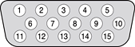

As a build-to-order option, the Xserve slot load computer can have a video graphics card installed. The card has a VGA connector for the video monitor.
The VGA connector is a three-row DB-15 (also called mini sub D15) connector for use with a VGA, SVGA, or XGA monitor. Figure 3-5 shows the pin configuration and Table 3-8 lists the signals and pin assignments.
Figure 3-5 VGA connector
Table 3-8 Signals on the VGA connector
| Pin | Signal name | Description |
|---|---|---|
| 1 | RED | Red video signal |
| 2 | GREEN | Green video signal |
| 3 | BLUE | Blue video signal |
| 4 | n.c. | No connect |
| 5 | GND | Ground |
| 6 | RED_RTN | Red video signal return |
| 7 | GREEN_RTN | Green video signal return |
| 8 | BLUE_RTN | Blue video signal return |
| 9 | n.c. | No connect |
| 10 | GND | Ground |
| 11 | n.c. | No connect |
| 12 | SDA | I2C data |
| 13 | HSYNC | Horizontal synchronization signal |
| 14 | VSYNC | Vertical synchronization signal |
| 15 | SCL | I2C clock |